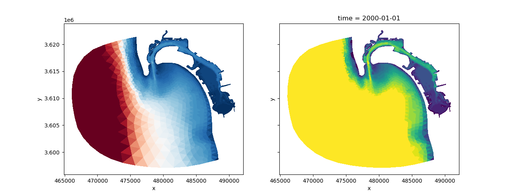

Note
Go to the end to download the full example code
ADH San Diego#
This is small dataset containing the output of a hydraulic simulation.
It contains a static dataset (bed elevation) and a time varying dataset (water depth).
<matplotlib.collections.PolyCollection object at 0x7f2850649a10>
import matplotlib.pyplot as plt
import numpy as np
import xugrid
uds = xugrid.data.adh_san_diego()
fig, (ax0, ax1) = plt.subplots(
nrows=1, ncols=2, sharex=True, sharey=True, figsize=(13, 5)
)
uds["elevation"].ugrid.plot(
ax=ax0, add_colorbar=False, cmap="RdBu", levels=np.arange(-75.0, 0.0)
)
uds["depth"].isel(time=0).ugrid.plot(
ax=ax1, add_colorbar=False, cmap="viridis", levels=np.arange(20.0)
)
Total running time of the script: (0 minutes 0.328 seconds)